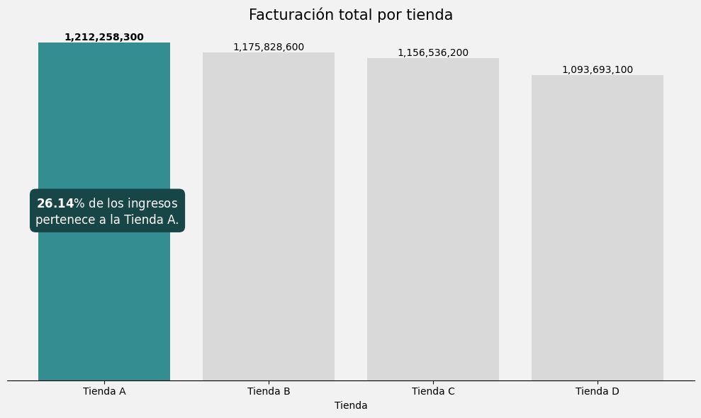
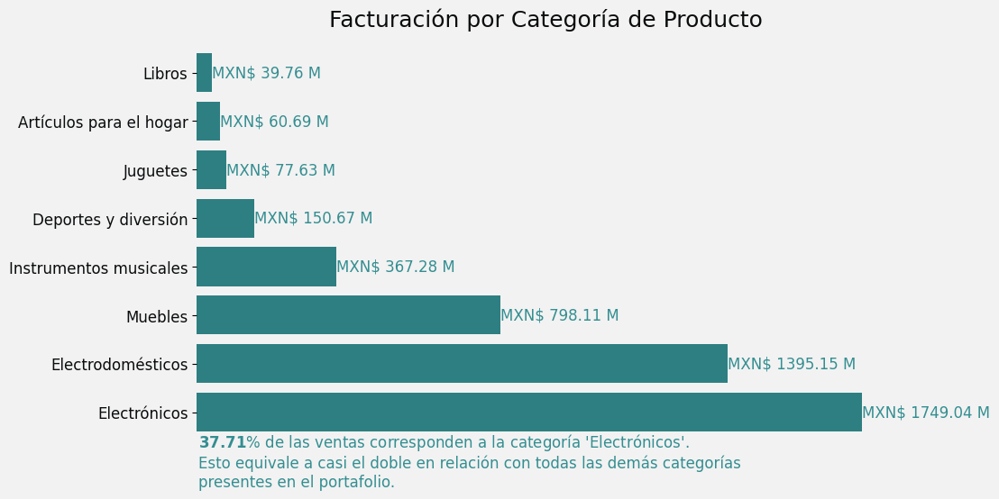
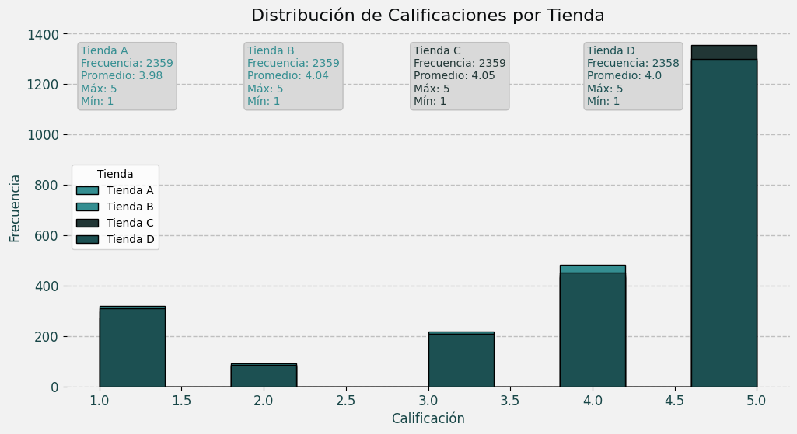
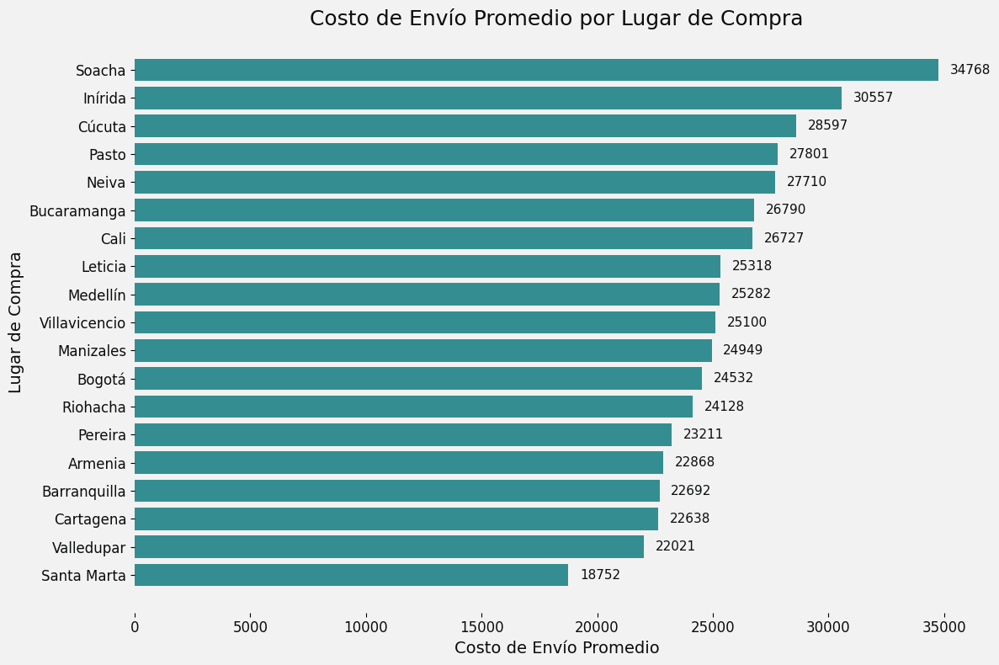
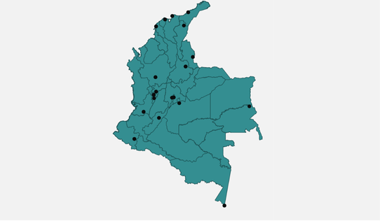

Tienda Alura
Tienda A
Mayores ingresos:$1,212,258,300
Producto mas vendidos
Electronicos con 37.71% en ventas
Tienda C
Mejor calificacion: 4.05
Tienda D
Ingresos en decrecientes y mala calificación
 
  
×